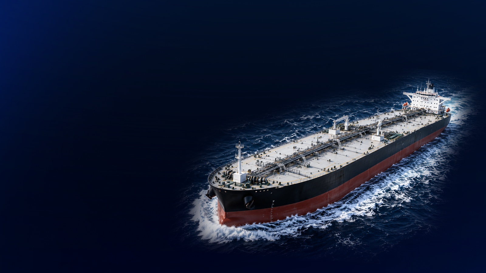
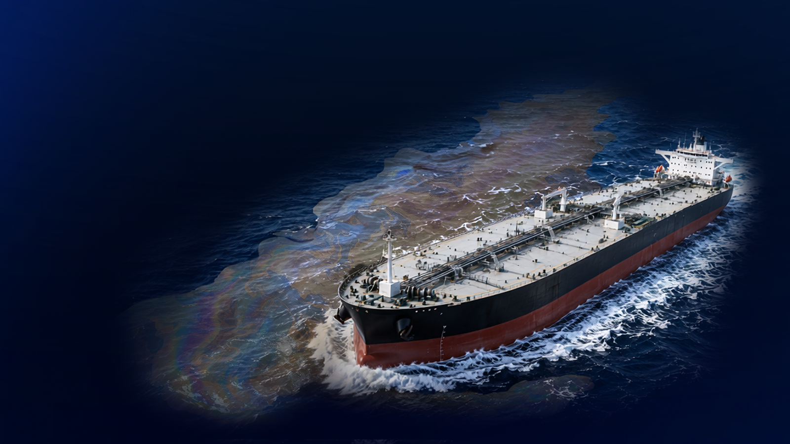

Um marco crítico para a ciência oceânica e para a soberania ambiental na Amazônia Azul (Soares et al., 2022)
De óleo cru foram derramadas nas águas do litoral brasileiro.
De linha de costa atingidos em múltiplos estados do país.
Áreas de conservação e proteção ambiental sofreram impacto direto.
Fauna e flora marinhas em risco foram diretamente atingidas.
SisMOM · Integração das Metas
Como é integrada nossa rede de observação, detecção, previsão e alerta.
role para ativarA rede integra sensores, satélites, detecção de navios e óleo, previsão de dispersão, modelos oceano-atmosfera, sala de situação, infraestrutura contínua e entrega de informação qualificada.
APIs em desenvolvimento para ampliar a interoperabilidade entre dados, serviços e instituições.